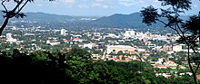

Economy of Honduras
|  San Pedro Sula, industrial center of Honduras | |
| Currency | Honduran Lempira (HNL, L) |
|---|---|
| Calendar year | |
Trade organizations | DR-CAFTA, WTO |
Country group |
|
| Statistics | |
| Population | |
| GDP | |
| GDP rank | |
GDP growth |
|
GDP per capita | |
GDP per capita rank | |
GDP by sector |
|
| 4.348% (2018)[4] | |
Population below poverty line | |
Labor force | |
Labor force by occupation |
|
| Unemployment | |
Main industries | sugar processing, coffee, woven and knit apparel, wood products, cigars |
| External | |
| Exports | |
Export goods | coffee, apparel, shrimp, automobile wire harnesses, cigars, bananas, gold, palm oil, fruit, lobster, lumber |
Main export partners |
|
| Imports | |
Import goods | communications equipment, machinery and transport, industrial raw materials, chemical products, fuels, foodstuffs |
Main import partners |
|
Gross external debt | |
| Public finances | |
| −2.7% (of GDP) (2017 est.)[6] | |
| Revenues | 4.658 billion (2017 est.)[6] |
| Expenses | 5.283 billion (2017 est.)[6] |
| |
All values, unless otherwise stated, are in US dollars. | |
The economy of Honduras is based mostly on agriculture, which accounts for 14% of its gross domestic product (GDP) in 2013. The country's leading export is coffee (US$340 million), which accounted for 22% of the total Honduran export revenues. Bananas, formerly the country's second-largest export until being virtually wiped out by 1998's Hurricane Mitch, recovered in 2000 to 57% of pre-Mitch levels. Cultivated shrimp is another important export sector. Since the late 1970s, towns in the north began industrial production through maquiladoras, especially in San Pedro Sula and Puerto Cortés.[15]
Honduras has extensive forests, marine, and mineral resources, although widespread slash and burn agricultural methods continue to destroy Honduran forests. The Honduran economy grew 4.8% in 2000, recovering from the Mitch-induced recession (−1.9%) of 1999. The Honduran maquiladora sector, the third-largest in the world, continued its strong performance in 2000, providing employment to over 120,000 and generating more than $528 million in foreign exchange for the country. Inflation, as measured by the consumer price index, was 10.1% in 2000, down slightly from the 10.9% recorded in 1999. The country's international reserve position continued to be strong in 2000, at slightly over US$1 billion. Remittances from Hondurans living abroad (mostly in the United States) rose 28% to $410 million in 2000. The Lempira (currency) was devaluing for many years, but stabilized at L19 to the United States dollar in 2005. The Honduran people are among the poorest in Latin America; gross national income per capita (2007) is US$1,649; the average for Central America is $6,736.[16] Honduras is the fourth poorest country in the Western Hemisphere; only Haiti, Nicaragua, and Guyana are poorer. Using alternative statistical measurements in addition to the gross domestic product can provide greater context for the nation's poverty.
The country signed an Enhanced Structural Adjustment Facility (ESAF) – later converted to a Poverty Reduction and Growth Facility (PRGF) with the International Monetary Fund in March 1999. Honduras (as of the about year 2000) continues to maintain stable macroeconomic policies. It has not been swift in implementing structural changes, such as privatization of the publicly owned telephone and energy distribution companies—changes which are desired by the IMF and other international lenders. Honduras received significant debt relief in the aftermath of Hurricane Mitch, including the suspension of bilateral debt service payments and bilateral debt reduction by the Paris Club—including the United States – worth over $400 million. In July 2000, Honduras reached its decision point under the Heavily Indebted Poor Countries Initiative (HIPC), qualifying the country for interim multilateral debt relief.
Land appears to be plentiful and readily exploitable, but the presence of apparently extensive land is misleading because the nation's rugged, mountainous terrain restricts large-scale agricultural production to narrow strips on the coasts and to a few fertile valleys. Honduras's manufacturing sector has not yet developed beyond simple textile and agricultural processing industries and assembly operations. The small domestic market and competition from more industrially advanced countries in the region have inhibited more complex industrialization.
In 2022, according to the National Institute of Statistics of Honduras (INE), 73% of the country's population is poor and 53% lives in extreme poverty.[17] The country is one of the most unequal in Latin America.[18]
Economic history
[edit]After Honduras achieved independence from Spain in the early 19th century, its economic growth became closely related to its ability to develop attractive export products. During much of the 19th century, the Honduran economy languished; traditional cattle raising and subsistence agriculture produced no suitable major export. In the latter part of the century, economic activity quickened with the development of large-scale, precious metal mining. The most important mines were in the mountains near the capital of Tegucigalpa and were owned by the New York and Honduras Rosario Mining Company (NYHRMC).
Silver was the principal metal extracted, accounting for about 55% of exports in the 1880s. Mining income stimulated commercial and ancillary enterprises, built infrastructure, and reduced monetary restraints on trade. There were few other beneficial economic effects, however, because the mining industry was never well integrated into the rest of the Honduran economy. The foreign mining companies employed a small workforce, provided little or no government revenue, and relied mostly on imported mining equipment.
20th century
[edit]Honduras's international economic activity surged in the early 20th century. Between 1913 and 1929, its agricultural exports rose from $3 million ($2 million from bananas) to $25 million ($21 million from bananas). These "golden" exports were supported by more than $40 million of specialized banana company investment in the Honduran infrastructure and were safeguarded by US pressure on the national government when the companies felt threatened.
The overall performance of the Honduran economy remained closely tied to banana prices and production from the 1920s until after the mid-century because other forms of commercial export agriculture were slow to emerge. In addition, until drastically reduced in the mid-1950s, the workforce associated with banana cultivation represented a significant proportion of the wage earners in the country. Just before the banana industry's largest strike in 1954, approximately 35,000 workers held jobs on the banana plantations of the United Fruit Company (later United Brands Company, then Chiquita Brands International) or the Standard Fruit Company (later brought by Castle and Cook, then Dole Food Company).
After 1950 Honduran governments encouraged agricultural modernization and export diversification by spending heavily on transportation and communications infrastructure, agricultural credit, and technical assistance. During the 1950s—as a result of these improvements and the strong international export prices—beef, cotton, and coffee became significant export products for the first time. Honduran sugar, timber, and tobacco also were exported, and by 1960 bananas had declined to a more modest share (45 percent) of total exports. During the 1960s, industrial growth was stimulated by the establishment of the Central American Common Market (CACM—see Appendix B).
As a result of the reduction of regional trade barriers and the construction of a high common external tariff, some Honduran manufactured products, such as soaps, sold successfully in other Central American countries. Because of the greater size and relative efficiency of the Salvadoran and Guatemalan industrial sectors, however, Honduras bought far more manufactured products from its neighbors than it sold to them. After the 1969 Soccer War with El Salvador, Honduras effectively withdrew from the CACM. Favorable bilateral trade arrangements between Honduras and the other former CACM partners were subsequently negotiated, however.
A political shift in the 1980s had strong and unexpected repercussions on the country's economic condition. Beginning in late 1979, as insurgency spread in neighboring countries, Honduran military leaders enthusiastically came to support United States policies in the region. This alignment resulted in financial support that benefited the civilian as well as the military ministries and agencies of Honduras. Honduran defense spending rose throughout the 1980s until it consumed 20 to 30 percent of the national budget. Before the military buildup began in fiscal year (FY) 1980, United States military assistance to Honduras was less than US$4 million. Military aid more than doubled to reach just under US$9 million by FY 1981, surged to more than $31 million by FY 1982, and stood at $48.3 million in FY 1983. Tiny Honduras soon became the tenth largest recipient of United States assistance aid; total economic and military aid rose to more than $200 million in 1985 and remained at more than $100 million for the rest of the 1980s.
The increasing dependence of the Honduran economy on foreign aid was aggravated by a severe, regionwide economic decline during the 1980s. Private investment plummeted in 1980, and capital flight for that year was $500 million. To make matters worse, coffee prices plunged on the international market in the mid-1980s and remained low throughout the decade. In 1993 average annual per capita income remained depressingly low at about $580, and 75 percent of the population was poor by internationally defined standards.
Traditionally, Honduran economic hopes have been pinned on land and agricultural commodities. Despite those hopes, however, usable land has always been severely limited. Honduras's mostly mountainous terrain confines agriculturally exploitable land to narrow bands along the coasts and to some previously fertile but now largely depleted valleys. The country's once abundant forest resources have also been dramatically reduced, and Honduras has not derived economically significant income from mineral resources since the 19th century. Similarly, Honduras's industrial sector never was fully developed. The heady days of the CACM (mid to -late 1960s), which produced an industrial boom for El Salvador and Guatemala, barely touched the Honduran economy except to increase its imports because of the comparative advantages enjoyed by the Salvadoran and Guatemalan economies and Honduras's inability to compete.
Bananas and coffee have also proven unreliable sources of income. Although bananas are less subject to the vagaries of international markets than coffee, natural disasters such as Hurricane Fifi in 1974, drought, and disease have appeared with a regular, albeit random, frequency to take their economic toll through severely diminished harvests. Moreover, bananas are grown and marketed mostly by international corporations, which keep the bulk of wealth generated. Coffee exports, equally unreliable as a major source of economic support, surpassed bananas in the mid1970s as Honduras's leading export income earner, but international price declines coupled with huge fiscal deficits underlined the vulnerability of coffee as an economic base.
1990s
[edit]This section is missing information about the devastating effects of Hurricane Mitch on this nation. Didn't it cause a recession here in 1998?. (September 2018) |
As Honduras entered the 1990s, it did have some factors working in its favor—relative peace and a stronger civilian government with less military interference in the politics and economy of the country than in past years. The country was hobbled, however, by horrendous foreign debt, could claim only diminished natural resources, and had one of the fastest-growing and urbanizing populations in the world. The government's daunting task then became how to create an economic base able to compensate for the withdrawal of much United States assistance without becoming solely dependent on traditional agricultural exports.
In the 1990s, bananas were booming again, particularly as new European trade agreements increased market size. Small banana producing cooperatives lined up in the 1990s to sell their land to the commercial giants, and the last banana-producing lands held by the government were privatized. Like most of Central America, Honduras in the 1990s began to woo foreign investors, mostly Asian clothing assembly firms, and it held high hopes for revenue to be generated by privatizing national industries. With one of the most strike-prone labor forces in Central America, debt-burdened and aging industrial assets, and a dramatically underdeveloped infrastructure, Honduras, however, has distinct economic disadvantages relative to its Central American and Caribbean neighbors, who compete with Honduras in the same export markets.
Honduran president Rafael Leonardo Callejas Romero, elected in November 1989, enjoyed little success in the early part of his administration as he attempted to adhere to a standard economic austerity package prescribed by the International Monetary Fund (IMF) and the World Bank. As the November 1993 presidential elections drew closer, the political fallout of austere economic measures made their implementation even less likely. Any hope for his party's winning the 1993 election was predicated on improving social programs, addressing employment needs, and appeasing a disgruntled, vocal public sector. However, reaching those goals required policies that moved away from balancing the budget, lowering inflation, and reducing the deficit and external debt to attract investment and stimulate economic growth.
Callejas inherited an economic mess. The economy had deteriorated rapidly, starting in 1989, as the United States Agency for International Development (AID) pointedly interrupted disbursements of its grants to Honduras to signal displeasure with the economic policies of the old government and to push the new government to make economic reforms. Nondisbursal of those funds greatly exacerbated the country's economic problems. Funds from the multilateral lending institutions, which eventually would help fill the gap left by the reduction of United States aid, were still under negotiation in 1989 and would be conditioned first on payment of arrears on the country's enormous external debt.
Between 1983 and 1985, the government of Honduras—pumped up by massive infusions of external borrowing—had introduced expensive, high-tech infrastructure projects. The construction of roads and dams, financed mostly by multilateral loans and grants, was intended to generate employment to compensate for the impact of the regionwide recession. In reality, the development projects served to swell the ranks of public-sector employment and line the pockets of a small elite. The projects never sparked private-sector investment or created substantial private employment. Instead, per capita income continued to fall as Honduras's external debt doubled. Even greater injections of foreign assistance between 1985 and 1988 kept the economy afloat, but it soon became clear that the successive governments had been borrowing time as well as money.
Foreign aid between 1985 and 1989 represented about 4.6 percent of the gross domestic product (GDP). About 44 percent of the government's fiscal shortfall was financed through cash from foreign sources. Side effects of the cash infusion were that the national currency, the lempira became overvalued and the number of exports dropped. A booming public sector, with its enhanced ability to import, was enough to keep the economy showing growth, based on private consumption and government spending. But the government did little to address the historical, underlying structural problems of the economy—its overdependence on too few traditional commodities and lack of investment. Unemployment mushroomed, and private investment withered.
By 1989 president Callejas's broad economic goal led a return of Honduran economic growth to 1960–80 levels. During the decades of the 1960s and 1970s, the country's economy, spurred mostly by erratically fluctuating traditional agricultural commodities, nevertheless averaged real annual growth of between 4 and 5 percent. At the end of the 1980s, however, Callejas had few remaining vehicles with which to pull the country out of the deep regionwide recession of the 1980s. Real growth between 1989 and 1993 translated to mostly negative or small positive per capita changes in the GDP for a population that was growing at close to 4 percent annually.
President Callejas attempted to adhere to conditions of desperately needed new loans. Cutting the size of the public sector workforce, lowering the deficit, and enhancing revenues from taxes—as mandated by the multilateral lending institutions—were consistently his biggest stumbling blocks. Despite his all-out effort to reduce the public-sector deficit, the overall ratio of fiscal deficit to the GDP in 1990 showed little change from that in 1989. The total public-sector deficit actually grew to 8.6 percent of the GDP, or nearly L1 billion, in 1991.
The 1993 deficit expanded to 10.6 percent of GDP. The Honduran government's medium-term economic objectives, as dictated by the IMF, were to have generated real GDP growth of 3.5 percent by 1992 and 4 percent by 1993. In fact, GDP growth was 3.3 percent in 1991, 5.6 percent in 1992, and an estimated 3.7 percent in 1993. The economy had operated so long on an ad hoc basis that it lacked the tools to implement coherent economic objectives. Solving the most immediate crisis frequently took precedence over long-term goals.
Inflation
[edit]By 1991 President Callejas had achieved modest success in controlling inflation. Overall inflation for 1990 had reached 36.4 percent—not the hyperinflation experienced by some Latin American counties—but still the highest annual rate for Honduras in forty years. The Honduran government and the IMF had set an inflation target of 12 percent for 1992 and 8 percent for 1993. The actual figures were 8.8 percent in 1992 and an estimated 10.7 percent for 1993. Hondurans had been accustomed to low inflation (3.4 percent in 1985, rising to 4.5 percent by the end of 1986), partly because pegging the lempira to the dollar-linked Honduras's inflation rate to inflation rates in developed countries. But the expectation for low inflation made the reality of high inflation that much worse and created additional pressures on the government for action when inflation soared in 1990.[19]
Unemployment
[edit]Between 1980 and 1983, 20 percent of the workforce was unemployed—double the percentage of the late 1970s. Job creation remained substantially behind the growth of the labor force throughout the 1980s. Unemployment grew to 25 percent by 1985, and combined unemployment and underemployment jumped to 40 percent in 1989. By 1993, 50 to 60 percent of the Honduran labor force was estimated to be either underemployed or unemployed.
The government's acceptance of foreign aid during the 1980s, in lieu of economic growth sparked by private investment, allowed it to ignore the necessity of creating new jobs. Honduras's GDP showed reasonable growth throughout most of the 1980s, especially when compared to the rest of Latin America, but it was artificially buoyed by private consumption and public-sector spending.
Mainstay agricultural jobs became scarcer in the late 1970s. Coffee harvests and plantings in border area decreased because fighting in neighboring Nicaragua and El Salvador spilled over into Honduras. Other factors contributing to the job scarcity were limited land, a reluctance on the part of coffee growers to invest while wars destabilized the region, and a lack of credit. Small farmers became increasingly unable to support themselves as their parcels of land diminished in size and productivity.
Problems in the agricultural sector have fueled urbanization. The Honduran population was 77 percent rural in 1960. By 1992 only 55 percent of the Honduran population continued to live in rural areas. Peasants (campesinos) flocked to the cities in search of work but found little there. Overall unemployment has been exacerbated by an influx of refugees from the wars in neighboring countries, attracted to Honduras, ironically, by its relatively low population density and relative peace. In the agricultural sector (which in 1993 still accounted for about 60 percent of the labor force), unemployment has been estimated to be far worse than the figures for the total labor force.
Honduran urban employment in the early 1990s has been characterized by underemployment and marginal informal-sector jobs, as thousands of former agricultural workers and refugees have moved to the cities seeking better lives. Few new jobs have been generated in the formal sector, however, because the domestic private sector and foreign investments have dropped and coveted public-sector jobs have been reserved mostly for the small Honduran middle-class with political or military connections. Only one of ten Honduran workers were securely employed in the formal sector in 1991.
In the mid-1980s, the World Bank reported that only 10,000 new jobs were created annually; the low rate of job creation resulted in 20,000 people being added to the ranks of the unemployed every year. The actual disparity between jobs needed for full employment and new jobs created exceeded that projection, however. For those with jobs, the buying power of their wages tumbled throughout the 1980s while the cost of basic goods, especially food, climbed precipitously.
Role of government
[edit]Throughout the 1960s and most of the 1970s, the military-led governments of Honduras ran a state-sponsored and state-financed economy. The governments provided most guarantees for loans to a strong but patronage-dominated and somewhat corrupt public sector that included recipients of graft extracted from foreign and domestic investors, and to costly state-developed enterprises. By 1989 and the election of president Rafael Leonardo Callejas Romero, however, a heavy toll had been taken by regionwide economic recession, civil war in neighboring countries, the drying up of most external credit, and capital flight equaling more than $1.5 billion.
Callejas began to shift economic policy toward privatizing government-owned enterprises, liberalizing trade and tariff regulations, and encouraging increased foreign investment through tax and other incentives. The Callejas administration did not seek less government control. Rather it changed the government's objectives by focusing on reducing public-sector spending, the size of the public-sector workforce, and the trade deficit. Overall economic planning became the responsibility of the National Superior Planning Council, directed by the minister of economy and commerce. President Callejas, a US-trained economist, brought new professionalism and technical skills to the central government as he began the arduous task of long-term economic reform.
The official exchange rate of the lempira, pegged at US$1=L2 since 1918, was dramatically devalued in 1990. Exchange controls had been introduced in 1982, resulting in a parallel currency market (black market) and several confusing official exchange rates operating simultaneously. Some of those rates were legally recognized in 1990 when President Callejas introduced a major series of economic policy reforms, which included reducing the maximum import tariff rate from 90 to 40 percent and getting rid of most surcharges and exemptions.
The value of the lempira was adjusted to US$1=L4, with the exception of the rate for debt equity conversions, which remained at the old rate of US$1=L2. The official conversion rate of the lempira fell to US$1=L7.26 in December 1993. The president also introduced temporary taxes on exports, which were intended to increase central government revenue. Additional price and trade liberalization measures and fewer government regulations became part of his ongoing reforms.
Budget
[edit]Throughout the 1980s, the Honduran government was heavily financed by foreign assistance. External financing—mostly bilateral credit from the United States—rose dramatically until it reached 87 percent of the public deficit in 1985, rising even further in subsequent years. By 1991 the public-sector deficit was entirely financed with net external credit. That financing permitted the government to reduce the demand for internal credit and, therefore, to maintain its established exchange rate.
In 1991 Callejas managed to give the appearance of having reduced the overall fiscal deficit, a requirement for new credit. But the deficit decrease was mostly an accounting device because it resulted from the postponement of external payments to the Paris Club debtors and eventually would be offset by pressure to raise public investment. During 1991, loan negotiations with multilateral and bilateral lending institutions brought Honduras $39.5 million in United States development assistance, $70 million in balance-of-payments assistance in the form of cash grants, and $18.8 million in food aid.
Honduras country also negotiated $302.4 million in concessional loans from the multilateral lending institutions. Total outstanding external debt as a percentage of GDP fell from 119 percent in 1990 to 114 percent in 1991 and to 112 percent in 1993. This drop was largely the result of debt forgiveness of $448.4 million by the United States, Switzerland, and the Netherlands. Scheduled amortization payments of an average $223.2 million per year, however, guaranteed that Honduras's gross funding requirements would remain large indefinitely.
The government of Honduras projected that overall tax revenues would increase from 13.2 percent of GDP in 1989 to about 15.7 percent in 1991. Adjustments for low coffee prices and the continuation of lax collection methods, however, undermined those goals. Despite these tax increases, compared to developed countries, Honduras has low tax rates with, particularly low property taxes.
Labor force
[edit]Honduras suffers from an overabundance of unskilled and uneducated laborers. Most Honduran workers in 1993 continued to be employed in agriculture, which accounted for about 60 percent of the labor force. More than half of the rural population, moreover, remains landless and heavily dependent on diminishing seasonal labor and low wages. Fifty-five percent of the farming population subsists on less than two hectares and earns less than $70 per capita per year from those plots, mostly by growing subsistence food crops.
In 1993 only about 9–13 percent of the Honduran labor force was engaged in the country's tiny manufacturing sector—one of the smallest in Central America. Skilled laborers are scarce. Only 25,000 people per year, of which about 21 percent are industrial workers, graduate yearly from the National Institute of Professional Training (Instituto Nacional de Formación Profesional- -INFOP) established in 1972.
Hundreds of small manufacturing firms, the traditional backbone of Honduran enterprise, began to go out of business beginning in the early 1990s, as import costs rose and competition through increasing wages for skilled labor from the mostly Asian-owned assembly industries strengthened. The small Honduran shops, most of which had manufactured clothing or food products for the domestic market, traditionally received little support in the form of credit from the government or the private sector and were more like artisans than conventional manufacturers. Asian-owned export assembly firms (maquiladoras), operating mostly in free zones established by the government on the Caribbean coast, attract thousands of job seekers and swell the populations of new city centers such as San Pedro Sula, Tela, and La Ceiba. Those firms employ approximately 16,000 workers in 1991.
About one-third of the Honduran labor force was estimated to be working in the service or "other" sector in 1993. That classification usually means that a person ekes out a precarious livelihood in the urban informal sector or as a poorly paid domestic. As unemployment soared throughout Central America in the 1980s, more and more people were forced to rely on their own ingenuity in order to simply exist on the fringes of Honduran society.
As for the informal sector, research has shown that evidence of child labor has been observed mostly in the Honduran agricultural sector.[20] In 2014, the U.S. Department of Labor's List of Goods Produced by Child Labor or Forced Labor cites three goods produced in such working conditions in Honduras; namely coffee, lobsters and melons.
Employment indicators and benefits
[edit]Honduran governments have set minimum wages since 1974, but enforcement has generally been lax. That laxity increased at the beginning of the 1980s. Traditionally, most Honduran workers have not been covered by social security, welfare, or minimum wages. Multinational companies usually paid more than the standard minimum wage, but, overall, the Honduran wage earner has experienced a diminution of real wages and purchasing ability for more than a decade. When they occurred, minimum wage adjustments generally did not keep up with the cost of living increases.
After a major currency devaluation in 1990, average Honduran workers were among the most poorly paid workers in the Western Hemisphere. By contrast, the banana companies paid relatively high wages as early as the 1970s. Banana workers continued at the top of the wage scale in the 1990s; however, in the 1980s, as banana production became less labor-intensive, the companies had decreased their investment and workforce. Consequently, fewer workers were employed as relatively well-paid agricultural wage earners with related benefits.
President Callejas responded to the severe poverty by implementing a specially financed Honduran Social Investment Fund (Fondo Hondureño de Inversión Social—FHIS) in 1990. The fund created public works programs such as road maintenance and provided United States surplus food to mothers and infants. Many Hondurans slipped through that fragile social safety net. As a continuing part of the social pact, and even more as the result of a fierce union-government battle, President Callejas announced in 1991 a 27.8 percent increase over a minimum wage that the government had earlier agreed upon. That increase was in addition to raises of 50 and 22 percent set, respectively, in January and September 1990. Despite those concessions, the minimum daily rate in 1991 was only $1.75 for workers employed by small agricultural enterprises and $3.15 for workers in the big exporting concerns; most workers did not earn the minimum wage.
Labor unions
[edit]Honduras has long been heavily unionized. In 1993 approximately 15 to 20 percent of the overall formal workforce was represented by some type of union, and about 40 percent of urban workers were union members. There were forty-eight strikes in the public sector alone in 1990, protesting the government's economic austerity program and layoffs of public-sector workers. More than 4,000 public-sector employees from the Ministry of Communications, Public Works, and Transport were fired in 1990. About 70,000 unionized workers remained in the faltering public sector at the beginning of 1991. However, the government largely made good its pledge to trim that number by 8,000 to 10,000 throughout 1991 as part of its austerity program.
In the private sector, 1990 saw 94 strikes in 64 firms, as workers fought for wage increases to combat inflation. A forty-two-day strike at the Tela Railroad Company (owned by Chiquita Brands International—formerly United Brands and United Fruit Company) was unsuccessful, however, and that defeat temporarily ended union efforts at direct confrontation.
In 1993 Honduras had three major labor confederations: the Confederation of Honduran Workers (Confederación de Trabajadores de Honduras—CTH), claiming a membership of about 160,000 workers; the General Workers Central (Central General de Trabajadores—CGT), claiming to represent 120,000 members; and the Unitary Confederation of Honduran Workers (Confederación Unitaria de Trabajadores de Honduras—CUTH), a new confederation formed in May 1992, with an estimated membership of about 30,000. The three confederations included numerous trade union federations, individual unions, and peasant organizations.
The CTH, the nation's largest trade confederation, was formed in 1964 by the nation's largest peasant organization, the National Association of Honduran Peasants (Asociación Nacional de Campesinos de Honduras—Anach), and by Honduran unions affiliated with the Inter-American Regional Organization of Workers (Organización Regional Interamericana de Trabajadores—ORIT), a hemispheric labor organization with close ties to the American Federation of Labor-Congress of Industrial Organizations (AFL-CIO).
In the early 1990s, the confederation had three major components: the 45,000-member Federation of Unions of National Workers of Honduras (Federación Sindical de Trabajadores Nacionales de Honduras—Fesitranh); the 22,000 member Central Federation of Honduran Free Trade Unions (Federación Central de Sindicatos Libres de Honduras); and the 2,200-member Federation of National Maritime Unions of Honduras (Federación de Sindicales Marítimas Nacionales de Honduras). In addition, Anach, claiming to represent between 60,000 and 80,000 members, was affiliated with Fesitranh.
Fesitranh was by far the country's most powerful labor federation, with most of its unions located in San Pedro Sula and the Puerto Cortés Free Zone. The unions of the United States-owned banana companies and the United States-owned petroleum refinery also were affiliated with Fesitranh. The CTH received support from foreign labor organizations, including ORIT, the American Institute for Free Labor Development (AIFLD), and Germany's Friedrich Ebert Foundation and was an affiliate of the International Confederation of Free Trade Unions (ICFTU).
Although it was not legally recognized until 1982, the CGT was originally formed in 1970 by the Christian Democrats and received external support from the World Confederation of Labour (WCL) and the Latin American Workers Central (Central Latinoamericana de Trabajadores—CLAT), a regional organization supported by Christian Democratic parties. In the late 1980s and early 1990s, however, the CGT leadership developed close ties to the National Party of Honduras (Partido Nacional de Honduras—PNH), and several leaders served in the Callejas government. Another national peasant organization, the National Union of Peasants (Unión Nacional de Campesinos—UNC), claiming a membership of 40,000, was affiliated with the CGT for many years and was a principal force within the confederation.
The CUTH was formed in May 1992 by two principal labor federations, the Unitary Federation of Honduran Workers (Federación Unitaria de Trabajadores de Honduras—FUTH) and the Independent Federation of Honduran Workers (Federación Independiente de Trabajadores de Honduras—FITH), as well as several smaller labor groups, all critical of the Callejas government's neoliberal economic reform program.
The Marxist FUTH, with an estimated 16,000 members in the early 1990s, was first organized in 1980 by three communist-influenced unions, but did not receive legal status until 1988. The federation had external ties with the World Federation of Trade Unions (WFTU), the Permanent Congress for Latin American Workers Trade Union Unity (Congreso Permanente de Unidad Sindical de Trabajadores de América Latina—CPUSTAL), and the Central American Committee of Trade Union Unity (Comité de Unidad Sindical de Centroamérica—CUSCA). Its affiliations included water utility, university, electricity company, brewery, and teacher unions, as well as several peasant organizations, including the National Central of Farm Workers (Central Nacional de Trabajadores del Campo—CNTC), formed in 1985 and active in land occupations in the early 1980s.
FUTH also became affiliated with a number of leftist popular organizations in a group known as the Coordinating Committee of Popular Organizations (Comité Coordinadora de las Organizaciones Populares—CCOP) that was formed in 1984. Dissident FUTH member formed the FITH, which was granted legal status in 1988. The FITH consisted of fourteen unions claiming about 13,000 members in the early 1990s.
Agriculture and land use
[edit]In 2018, Honduras produced 5.5 million tons of sugar cane, 2.5 million tons of palm oil, 771 thousand tons of banana and 481 thousand tons of coffee, these being its main crops. In addition, it produced 704 thousand tons of maize, 261 thousand tons of orange, 293 thousand tons of melon, 127 thousand tons of beans and 81 thousand tons of pineapple, in addition to smaller yields of other agricultural products such as watermelon, potato, tomato, cabbage, grapefruit, sorghum etc.[21]
The total land area of Honduras is 11.2 million hectares, of which a scant 1.7 million hectares (about 15 percent) are well suited for agriculture. Most land in Honduras is covered by mountains, giving rise to the country's nickname, "the Tibet of Central America." Nevertheless, the Honduran economy has always depended almost exclusively on agriculture, and in 1992 agriculture was still the largest sector of the economy, contributing 28 percent to the GDP.
Less than half of Honduras's cultivable land was planted with crops as recently as the mid-1980s. The rest was used for pastures or was forested and was owned by the government or the banana corporations. Potential for additional productivity from fallow land was questionable, however, because much of Honduras's soil lacks the thick volcanic ash found elsewhere in Central America. By 1987 about 750,000 hectares of Honduran land had been seriously eroded as a result of misuse by cattle ranchers and slash-and-burn squatters who planted unsuitable food crops.
The Honduran government and two banana companies—Chiquita Brands International and Dole Food Company—owned approximately 60 percent of Honduras's cultivable land in 1993. The banana companies acquired most of their landholdings in the early 20th century in return for building the railroads used to transport bananas from the interior to the coast. Much of their land remained unused because it lacked irrigation. Only about 14 percent of cultivated land was irrigated in 1987. Most land under cultivation in 1992 was planted in bananas, coffee, and specialized export crops such as melons and winter vegetables.
Agricultural policy
[edit]The agricultural sector's output showed little or no growth between 1970 and 1985. As a result of favorable weather and market conditions beginning in 1995, however, the agricultural sector grew at a rate of 2.6 percent annually, slightly above the average for Latin America during that period. Production of basic grains and coffee increased; the export price of bananas was high; and pork, poultry, and milk produced for the domestic market increased. Nontraditional fruits and vegetables also increased in value.
Honduran agricultural production overall has tended to be low because the amount of crop yielded by a given amount of land has been low. For example, Honduran chocolate yields historically have been only about half those of Costa Rica. Instead of using improved techniques to increase the productivity of the land, Honduran farmers have merely expanded the hectarage under cultivation to produce more crops—pushing their fields ever farther into the forests. Given the limited amount of good quality agricultural land, to begin with, that policy has resulted in continual deforestation and subsequent erosion. This reluctance to improve techniques, coupled with generally poor soil, a lack of credit, and poor infrastructure, has contributed to low production figures.
Land reform
[edit]The Honduran government nominally began to address inequitable land ownership in the early 1960s. Those efforts at reform focused on organizing rural cooperatives. About 1,500 hectares of government-owned land were distributed by the National Agrarian Institute (Instituto Nacional Agrario—INA) beginning in 1960.
A military coup in 1963 resulted in an end to the land reform program. Lacking even modest government-directed land reforms, squatting became the primary means for poor people to gain land throughout the early 1970s. These actions spurred the government to institute new agrarian reforms in 1972 and 1975. Although all lands planted in export crops were exempted from reform, about 120,000 hectares were, nevertheless, divided among 35,000 poor families.
By 1975 the pendulum had swung back, and agrarian reform was all but halted. From 1975 through the 1980s, illegal occupations of unused land increased once again. The need for land reform was addressed mostly by laws directed at granting titles to squatters and other landholders, permitting them to sell their land or to use it as collateral for loans.
Despite declarations by the Callejas government in 1989 of its intent to increasingly address social issues, including land tenure and other needs of small farmers, the early 1990s were jolted by increased conflicts between peasants and the Honduran security forces. Agricultural credit and government support increasingly favored export crop producers at the expense of producers of basic food crops.
The Honduran land reform process under President Callejas between 1989 and 1992 was directed primarily at large agricultural landowners. An agrarian pact, signed by landowners and peasant organizations in August 1990, remained underfunded and largely unimplemented. Furthermore, violence erupted as discharged members of the Honduran military forcibly tried to claim land that had already been awarded to the peasant organization Anach in 1976.
In May 1991, violence initiated by members of the Honduran military resulted in the deaths of eight farmers. To keep similar situations around the country from escalating into violence, the government promised to parcel out land belonging to the National Corporation for Investment (Corporación Nacional de Inversiones—Conadin). The government also pledged to return to peasants land that had been confiscated by the Honduran military in 1983.
An Agricultural Modernization Law, passed in 1992, accelerated land titling and altered the structure of land cooperatives formed in the 1960s. The law permitted cooperative members to break up their holdings into small personal plots that could be sold. As a result, some small banana producers suffering from economic hard times chose to sell their land to the giant banana producers. After an agreement was reached with the European Union (EU) to increase Honduras's banana quota to the EU, the large banana companies were avid for additional land for increased production to meet the anticipated new demand from Europe.
Traditional crops
[edit]Throughout the 20th century, Honduras's agriculture has been dominated first by bananas and then to a lesser extent by coffee and sugar. In 1992, bananas and coffee together accounted for 50 percent of the value of Honduran exports and made the biggest contribution to the economy. Total banana sales were $287 million and total coffee sales amounted to $148 million. These figures are impressive yet reflect production losses suffered by banana producers and the withholding of coffee exports from the market in an effort to fight steep price declines.
Another major blow to Honduran agriculture came from Hurricane Mitch and its aftermath in 1998 and 1999. As of 2012 both industries are on the upswing. The banana industry is dominated by Chiquita and the Dole Food Company, two multinational corporations. The coffee industry, in contrast, offers better opportunities for small Honduran family farms to compete. Sugar has also been an important Honduran crop.
Chiquita Brands International and Dole Food Company now account for most Honduran banana production and exports. Honduras's traditional system of independent banana producers, who, as late as the 1980s, sold their crops to the international banana companies, was eroded in the 1990s. In the absence of policies designed to protect independent suppliers, economically strapped cooperatives began to sell land to the two large corporations.
Although Honduran banana production is dominated by multinational giants, such is not the case with coffee, which is grown by about 55,000 mostly small producers. Coffee production in Honduras has been high despite relatively low independent yields because of the large numbers of producers. Honduras, in fact, consistently produced more than its international quota until growers began to withhold the crop in the 1980s in an attempt to stimulate higher prices. Despite the efforts of the growers, coffee prices plunged on the international market from a high of more than $2.25 per kilogram in the mid-1970s to less than $0.45 per kilogram in the early 1990s. As a result of the declining prices, coffee producers were becoming increasingly marginalized. With the aid of affordable loans from foreign investors, more and more Honduran coffee growers are learning to produce high-value organic coffee for today's economy.
The outlook for the sugar industry, which had boomed during the 1980s when Honduran producers were allowed to fill Nicaragua's sugar quota to the United States, seemed bleak in 1993. Restoration of the sugar quota to Nicaraguan growers has been a major blow to Honduras's small independent producers, who had added most of Nicaragua's quota to their own during the United States embargo of Nicaragua. Higher costs for imported fertilizers because of the devaluation of the lempira add to the problem.
Honduran producers seek relief from a relatively low official price of 25 lempiras per kilogram of sugar by smuggling sugar across the borders to Nicaragua and El Salvador, where the support prices are higher. Sugar growers who can afford it have begun to diversify by growing pineapples and rice. Many independent sugar growers, like independent banana producers, have become indignant over the relatively high profits shown by refiners and exporters. Strikes by producers at harvest time in 1991 forced the closure of the Choluteca refinery for a short time but had little effect on the depressed long-term outlook for the industry.
Nontraditional crops
[edit]While the total value of export merchandise fell in 1990 and 1991 and had still not recovered in 1993 to its 1989 level, the overall agricultural sector output has grown somewhat because of growth in the sale of winter vegetables and shrimp. Nontraditional vegetables and fruit produced $23.8 million in export revenue in 1990, a figure that was almost double the 1983 figure. Nontraditional agricultural crops represented 4.8 percent of the value of total exports in 1990, compared to 2.8 percent in 1983.
Some development experts argue that government protection of corn, bean, and rice production by small farmers is a futile effort in the long-term goal of poverty reduction. On the other hand, they see significant economic potential for nontraditional crops, if they are handled properly. Analysts also note, however, that Honduras is at a distinct disadvantage relative to its Central American neighbors because of its poor transportation system. Nontraditional exports require the ability to get fresh produce from the fields to distant markets rapidly.
Livestock
[edit]In the early 1980s, the cattle industry appeared to have the potential to be an important part of the Honduran economy. The Honduran cattle sector, however, never developed to the extent that it did in much of the rest of Central America. Cattle production grew steadily until 1980–81 but then declined sharply when profits fell because of high production costs. The small Honduran meat packing industry declined at the same time, and several meat packing plants closed. As late as 1987, livestock composed 16 percent of the value-added agricultural sector but the industry continued to decline. By 1991–92, beef exports accounted for only 2.9 percent of the value of total exports.
Sales of refrigerated meat were the third or fourth highest source of export earnings in the mid-1980s, but like other Honduran agricultural products, beef yields were among the lowest in Central America. As world prices fell and production costs, exacerbated by drought, rose, there was less incentive to raise cattle. For a period of time, cattle farmers illegally smuggled beef cattle to Guatemala and other neighboring countries where prices were higher, but the Honduran cattle sector never became competitive internationally. The two large banana companies have also owned large cattle ranches where they raised prime beef, but these large companies had the flexibility to change crops as the market demanded.
Honduran dairy herds fared about the same as beef cattle, and Honduran milk yields were also among the lowest in Central America. The dairy industry was further handicapped by the difficulties of trying to transport milk over poor roads in a tropical country, as well as by stiff competition in the domestic market from subsidized foreign imports, mostly from the United States.
Fishing
[edit]Honduras significantly developed its shrimp industry during the 1980s and in the Latin American market was second only to Ecuador in shrimp exports by 1991. In 1992 shrimp and lobster jumped to 12 percent of export earnings. Shrimp contributed $97 million in export sales to the economy in 1992—an increase of 33 percent over the previous year. The industry was dependent, however, on larvae imported from the United States to augment its unstable natural supply.
Technicians from Taiwan were contracted by large producers in 1991 to help develop laboratory larvae, but bitter feuds developed between independent shrimpers and the corporations. Local shrimpers charged that corporate methods were damaging the environment and destroying natural stock through destruction of the mangrove breeding swamps. Corporate shrimp farmers then began to move their operations farther inland, leaving local shrimpers to contend with diminished natural supplies on the mosquito-infested coast.
Forestry
[edit]As in much of Central America, Honduras's once abundant forest resources have been badly squandered. In 1964 forests covered 6.8 million hectares, but by 1988 forested areas had declined to 5 million hectares. Honduras continued to lose about 3.6 percent of its remaining forests annually during the 1980s and early 1990s. The loss is attributable to several factors. Squatters have consistently used land suitable only for forests to grow scantyield food crops; large tracts have been cleared for cattle ranches; and the country has gravely mismanaged its timber resources, focusing far more effort on logging than on forestry management.
The government began an intensive forestry development program in 1974, supposedly intended to increase management of the sector and to prevent exploitation by foreign-owned firms. The Honduran Corporation for Forestry Development (Corporación Hondureña de Desarrollo Forestal—Cohdefor) was created in 1974, but it quickly developed into a corrupt monopoly for overseeing forest exports. Timber was mostly produced by private sawmills under contracts selectively granted by Cohdefor officials.
Ongoing wasteful practices and an unsustainable debt, which was contracted to build infrastructure, appear to have undercut most conservation efforts. The military-dominated governments contracted huge debt with the multilateral development agencies, then extracted timber to pay for it. Cohdefor generally granted licenses to private lumber companies with few demands for preservation, and it had little inclination or incentive to enforce the demands it did make.
With encouragement from the United States Agency for International Development (AID), the Honduran government began to decentralize Cohdefor beginning in 1985. Under the decentralization plan, regulatory responsibilities were transferred from the central government to mayors and other municipal officials on the assumption that local officials would provide better oversight. Despite decentralization and the sale of government assets, Cohdefor's remaining debt was $240 million in 1991. The government also assumed continued financial responsibility for the construction of a new airstrip in the area of timber extraction, upgrading facilities at Puerto Castilla and Puerto Lempira, and providing electricity at reduced prices to lumber concerns as part of the privatization package.
Major legislation was passed in 1992 to promote Honduran reforestation by making large tracts of state-owned land more accessible to private investors. The legislation also supplied subsidies for development of the sector. The same law provided for replanting mountainous regions of the country with pine to be used for fuel.
Natural resources and energy
[edit]Mining, the mainstay of the Honduran economy in the late 19th century, declined dramatically in importance in the 20th century. The New York and Honduras Rosario Mining Company (NYHRMC) produced $60 million worth of gold and silver between 1882 and 1954 before discontinuing most of its operations.
Mining's contribution to the GDP steadily declined during the 1980s, to account for a 2 percent contribution in 1992. El Mochito mine in western Honduras, the largest mine in Central America, accounted for most mineral production. Ores containing gold, silver, lead, zinc, and cadmium were mined and exported to the United States and Europe for refining.
Mining exports will represent 293 million dollars in 2021. The NGO Fosdeh points out that mineral and hydrocarbon extraction is "changing the geography" of Honduras: with the mining concessions underway, the area earmarked for extraction could reach 5% of the national territory in the coming years.[22]
Energy sources
[edit]Honduras has for many years relied on fuelwood and biomass (mostly waste products from agricultural production) to supply its energy needs. The country has never been a producer of petroleum and depends on imported oil to fill much of its energy needs. In 1991 Honduras consumed about 16,000 barrels (2,500 m3) of oil daily. Honduras spent about $143 million, or 13 percent of its total export earnings, to purchase oil in 1991. The country's one small refinery at Puerto Cortés closed in 1993.
Various Honduran governments have done little to encourage oil exploration, although substantial oil deposits have long been suspected in the Río Sula valley and offshore along the Caribbean coast. An oil exploration consortium consisting of the Venezuelan state oil company, Venezuelan Petroleum, Inc. (Petróleos de Venezuela S.A. or PDVSA), Cambria Oil, and Texaco expressed interest in the construction of a refinery at Puerto Castilla in 1993, with production aimed at the local market.
Gasolineras Uno is a Honduran gas stations company that has expanded its presence to include stores in most of Central America and in South America.[23]
Fuelwood and biomass have traditionally met about 67 percent of the country's total energy demand; petroleum, 29 percent; and electricity, 4 percent. In 1987 Honduran households consumed approximately 60 percent of total energy used, transportation and agriculture used about 26 percent, and industry used about 14 percent. Food processing consumed about 50 percent of industrial sector energy, followed by petroleum and chemical manufacturing.
Electric power
[edit]Honduran electrification is low and uneven relative to other countries in Latin America. The World Bank estimates that only about 36 percent of the Honduran population had access to electricity (20 percent of the rural population) in 1987. The country's total capacity in 1992 was 575 megawatts (MW), with 2,000 megawatt-hours produced. A mammoth hydroelectric plant, the 292-MW project at El Cajón, began producing electricity in 1985 to help address the country's energy needs. The plant, however, soon became heavily indebted because of the government's electricity pricing policies (not charging public-sector institutions, for example) and because of the appointment of political cronies as top management officials. El Cajón also developed costly structural problems requiring extensive maintenance and repairs.
Officials estimated that the government's decision to provide free service to public-sector institutions contributed to a 23 percent increase in publicsector consumption in 1990. Experts estimated that additional electrical generation capacity would likely be needed to keep pace with demand. The Honduran Congress assumed authority for setting electric prices beginning in 1986 but then became reluctant to increase rates. Under pressure from the World Bank, it did agree to a 60 percent increase in 1990, with additional increases in 1991. To offset these increased rates for residential users, the National Congress initiated a system of direct subsidies that ran through 1992.
Secondary and tertiary industries
[edit]Manufacturing
[edit]The country's manufacturing sector was small, contributing only 15 percent to the total GDP in 1992. Textile exports, primarily to the US, led the Honduran manufacturing sector. The maquiladora, or assembly industry, was a growth industry in the generally bleak economy. Asian-owned firms dominated the sector, with twenty-one South Korean-owned companies in export processing zones located in the Río Sula valley in 1991.
The maquiladoras employed approximately 16,000 workers in 1991; another nine firms opened in 1992. Job creation, in fact, is considered to be the primary contribution of the assembly operations to the domestic economy. The export textile manufacturing industry all but wiped out small, Honduran manufacturers, and food processors, whose goods were historically aimed at the domestic market, were also adversely affected.
The small Honduran firms could not begin to compete with the assembly industry for labor because of the maquiladoras' relatively high wage scale of close to $4 per day. Small firms also found it increasingly difficult to meet the high cost of mostly imported inputs. Membership in the Honduran Association of Small and Medium Industry (Asociación Hondureña de Empresas Pequeñas y Medianas) declined by 70 percent by 1991, compared to pre-maquiladora days, foreshadowing the likely demise of most of the small shops.
Honduran domestic manufacturers also suffered from increased Central American competition resulting from a trade liberalization pact signed in May 1991 by Honduras, El Salvador, and Guatemala. Overall, the Honduran manufacturing sector has mimicked other sectors of the economy—it is mostly noncompetitive, even in a regional context, because of insufficient credit and the high cost of inputs. Relatively high interest rates and a complicated investment law have also inhibited the foreign-dominated manufacturing sector from taking off.
The government-sponsored Puerto Cortés Free Zone was opened in 1976. By 1990 an additional five free zones were in operation in Omoa, Coloma, Tela, La Ceiba, and Amapala. A series of privately run Export Processing Zones were also established in competition with the government-sponsored free zones. These privately run zones offered the same standard import-export incentives as the government zones. Most of the government and privately run zones were located along the Caribbean coast in a newly developing industrial belt.
Firms operating outside of the special "enterprise zones" (either privately run, export-processing zones or government sponsored free zones) enjoy many of the same benefits as those operating within the zones. The Honduran Temporary Import Law permits companies that export 100 percent of their production to countries outside the CACM countries to hold ten-year exemptions on corporate income taxes and duty-free import of industrial inputs.
Analysts continue to debate the actual benefits of the shift away from the import-substitution industrialization (ISI) policies of the 1960s and 1970s toward a new focus on free zones and assembly industries in the 1990s. Critics point to the apparent lack of commitment by foreign manufactures to any one country site or to the creation of permanent infrastructure and employment. They question whether new employment will be enough to offset the loss of jobs in the more traditional manufacturing sector. A value of $195 million to the Honduran economy from assembly industries in 1991—when the value of clothing exports was greater than that of coffee—was a compelling argument in favor of the shift, however.
Construction
[edit]High interests rates, particularly for housing, continued to hurt the Honduran construction industry in 1993, but danger from high rates was partially offset by some public-sector investment. Privatization of formerly state-owned industries through debt swaps also negatively affected construction as prices for basic materials such as cement increased and credit tightened. A major devaluation of the lempira added to the already high cost of construction imports. Construction contributed 6.0 percent to the GDP in 1992.
Banking
[edit]The Honduran financial sector is small in comparison to the banking systems of its neighbors. After 1985, however, the sector began to grow rapidly. The average annual growth rate of value added to the economy from the financial sector for the 1980s was the second-highest in Latin America, averaging 4 percent. By 1985 Honduras had twenty-five financial institutions with 300 branch offices. Honduran commercial banks held 60 percent of the financial system's assets in 1985 and nearly 75 percent of all deposits. With the exception of the Armed Forces Social Security Institute, all commercial banks were privately owned, and most were owned by Honduran families. In 1985 there were two government-owned development banks in Honduras, one specializing in agricultural credit and the other providing financing to municipal governments.
At the behest of the International Monetary Fund (IMF) and World Bank, Honduras began a process of financial liberalization in 1990. The process began with the freeing of agricultural loan rates and was quickly followed by the freeing of loan rates in other sectors. Beginning in late 1991, Honduran banks were allowed to charge market rates for agricultural loans if they were using their own funds. By law, the banks had to report their rates to monetary authorities and could fix rates within two points of the announced rate.
In 1991 commercial banks pressured the government to reduce their 35 percent minimum reserve ratio. This rate remained standard until June 1993 when the minimum requirement was temporarily lifted to 42 percent. The rate was dropped to 36 percent three months later. The banks had excess reserves, and lending rates were in the area of 26 to 29 percent, with few borrowers. Prior to liberalization measures, the Central Bank of Honduras (Banco Central de Honduras) maintained interest rate controls, setting a 19 percent ceiling, with the market lending rate hovering around 26 percent in late 1991. With inflation hitting 33 percent in 1990, there was, in fact, a negative real interest rate, but this situation reversed in 1991 when rates were high relative to inflation. Rates of 35 to 43 percent in 1993 were well above the inflation rate of 13 to 14 percent. Bankers argued for further liberalization, including easing of controls in the housing and nonexport agricultural sectors.
A Honduran stock exchange was established in August 1990 with transactions confined to trading debt. Nine companies were registered with the exchange in 1991; in 1993 this number had grown to eighteen. It appears doubtful, however, that the market will develop fully, given the reluctance of family-held firms to open their books to public scrutiny.
Tourism
[edit]Foreign tourists are attracted to Honduras by the Mayan ruins in Copán and coral reef skin-diving off the Islas de la Bahía (Bay Islands). Poor infrastructure, however, has discouraged the development of substantial international tourism. Despite these problems, the number of visitors arriving in Honduras rose from fewer than 200,000 in 1987 to almost 250,000 in 1989. Small ecotourism projects, in particular, are considered to have significant potential.
Trade
[edit]In the early 1990s, the United States was by far Honduras's leading trading partner, with Japan a distant second. United States exports to Honduras in 1992 were valued at US$533 million, about 54 percent of the country's total imports of $983 million. Most of the rest of Honduras's imports come from its Central American neighbors. Despite its status as a beneficiary of both the Caribbean Basin Initiative (CBI) and the Generalized System of Preferences (GSP)--both of which confer duty-free status on Honduran imports to the United States—Honduras has run a long-standing trade deficit with the United States.
Total exports of goods and services by Honduras in 1992 was $843 million, of which about 52 percent went to the United States. The current amount exported by Honduras as of 2017 is $8.675 billion (USD$), with 34.5% of the said exports now going to the United States.[24]
Linkages to the United States
[edit]As with most Latin American countries, Honduras's economy is closely tied to the US. The US is Honduras's primary trading partner and the source of about two-thirds of the country's foreign direct investment. US multinationals Dole Food Company and Chiquita control a large portion of Honduras's agricultural exports. Presently, Honduras participates alongside the Rainforest Alliance for the exporting of agricultural goods to the US.
Hondurans working in the US send more than $2 billion each year to their families in Honduras; these remittances account for 28.2% of Honduras's GDP (2007 information [25]).
Foreign investment
[edit]With the exception of relatively recent, Asian-dominated investment in assembly firms along Honduras's northern coast, the country remains heavily dependent on United States-based multinational corporations for most of its investment needs in the early 1990s. Overall investment as a percentage of GDP declined dramatically during the 1980s, from about 25 percent in 1980 to a meager 15 percent in 1990. Dole Food Company and Chiquita Brands International together have invested heavily in Honduran industries as diverse as breweries and plastics, cement, soap, cans, and shoes.
As Honduras enters the 1990s, it faces challenging economic problems. The solutions relied on in the past—traditional export crops, the maquiladora assembly industry, and the 1980s' development schemes—appear unlikely to provide enough new jobs for a rapidly growing population. The major economic challenge for Honduras over the next decade will be to find dependable sources of sustainable economic growth.
Statistics
[edit]- GDP
- L 233 billion (2007.)
- US$12.3 billion (2007.)
- International dollars (purchasing power parity method) $24.69 billion (2007 est.)[26]
- GDP – real growth rate 6% (2007 est.)
- GDP – per capita purchasing power parity – 4,700 (2014 est.)
- GDP – composition by sector
- agriculture 20%
- industry 25%
- services 55% (1998 est.)
- Population below poverty line 22% (2006 est.)[27]
- Household income or consumption by percentage share
- lowest 10% consume 1.2%
- highest 10% consume 42.1% (1996)
- Inflation rate (consumer prices) 14% (1999 est.)
- Labor force 2.3 million (1997 est.)
- Labor force – by occupation agriculture 29%, industry 21%, services 60% (1998 est.)
- Unemployment rate 12% (1999); underemployed 30% (1997 est.)
- Budget
- revenue $980 million
- expenditures $1.15 billion including capital expenditures of $NA (1998 est.)
- Industries bananas, sugar, coffee, textiles, clothing, wood products
- Industrial production growth rate 9% (1992 est.)
- Electricity – production 2,904 GWh (1998)
- Electricity – production by source
- fossil fuel 34.44%
- hydro 65.56%
- nuclear 0%
- Electricity – consumption 2,742 GWh (1998)
- Electricity – exports 16 GWh (1998)
- Electricity – imports 57 GWh (1998)
- Agriculture – products bananas, coffee, citrus; beef; timber; shrimp
- Exports $1.6 billion (f.o.b., 1999 est.)
- Exports – commodities coffee, bananas, shrimp, lobster, meat; zinc, lumber
- Exports – partners US 73%, Japan 4%, Germany 4%, Belgium, Spain (1998)
- Imports $2.7 billion (f.o.b., 1999 est.)*Imports – partners US 60%, Guatemala 5%, Netherlands Antilles, Japan, Germany, Mexico, El Salvador (1998)
- Debt – external $4.4 billion (1999)
- Economic aid – recipient $557.8 million (1999)
- Currency 1 lempira (L) = 100 centavos
- Exchange rates lempiras (L) per US$1 – 19.00 (October 2005), 14.5744 (January 2000), 14.5039 (1999), 13.8076 (1998), 13.0942 (1997), 12.8694 (1996), 10.3432 (1995) .... 1.00 (1980)
| year | gdp annual growth (%) | inflation (%) | year | gdp annual growth (%) | inflation (%) | year | gdp annual growth (%) | inflation (%) | year | gdp annual growth (%) | inflation (%) | year | gdp annual growth (%) | inflation (%) | ||||
|---|---|---|---|---|---|---|---|---|---|---|---|---|---|---|---|---|---|---|
| 1960 | n.d. | n.d. | 1970 | 3.6 | 4.4 | 1980 | 0.7 | 13.2 | 1990 | 0.1 | 21.2 | 2000 | 5.7 | 30.8 | ||||
| 1961 | 1.9 | 4.2 | 1971 | 4.0 | −2.8 | 1981 | 2.5 | 7.2 | 1991 | 3.3 | 26.0 | 2001 | 2.7 | 8.1 | ||||
| 1962 | 5.8 | 2.9 | 1972 | 5.8 | 3.9 | 1982 | −1.4 | 4.4 | 1992 | 5.6 | 9.1 | 2002 | 3.8 | 5.1 | ||||
| 1963 | 3.6 | 2.1 | 1973 | 7.9 | 5.3 | 1983 | −0.9 | 7.0 | 1993 | 6.2 | 13.6 | 2003 | 4.5 | 5.8 | ||||
| 1964 | 5.4 | 5.7 | 1974 | −1.2 | 14.8 | 1984 | 4.3 | 3.4 | 1994 | −1.3 | 28.9 | 2004 | 6.2 | 6.5 | ||||
| 1965 | 9.0 | 2.1 | 1975 | 2.1 | 6.4 | 1985 | 4.2 | 5.2 | 1995 | 4.1 | 24.9 | 2005 | 6.1 | 7.3 | ||||
| 1966 | 5.4 | 2.6 | 1976 | 10.5 | 8.5 | 1986 | 0.7 | 3.9 | 1996 | 3.6 | 22.9 | 2006 | 6.3 | 4.8 | ||||
| 1967 | 6.0 | 2.6 | 1977 | 10.4 | 12.2 | 1987 | 6.0 | 2.8 | 1997 | 5.0 | 22.3 | 2007 | 6.3 | 7.0 | ||||
| 1968 | 6.6 | 1.4 | 1978 | 10.0 | 5.1 | 1988 | 4.6 | 6.5 | 1998 | 2.9 | 11.6 | 2008 | 4.0 | |||||
| 1969 | 0.7 | 2.6 | 1979 | 4.7 | 11.5 | 1989 | 4.3 | 7.1 | 1999 | −1.9 | 11.6 | 2009 | ||||||
| Notes: GDP annual growth is growth of real (constant lempiras) GDP, not nominal (current) GDP. | ||||||||||||||||||
| region | 2007 | 2008 | ratio: 2008/2007 |
|---|---|---|---|
| World | 5.2 | 3.4 | 0.654 |
| United States | 2.0 | 1.1 | 0.550 |
| Central America | 5.6 | 3.3 | 0.589 |
| Honduras | 6.3 | 4.0 | 0.635 |
| Source: Banco Central de Honduras, Memoria anual 2008, p 23. Retrieved July 2009. | |||
The slowed rate of growth in 2008 (4%, vs. 6.3% in 2007) reflected the general downturn in the world economy that year. The Banco Central de Honduras (central bank) named the debilitation of global demand, and loss of dynamism in final consumer demand, as important factors in the slowing of Honduras's economic growth in 2008.[28] The table here shows the slowing of growth in 2008 versus 2007 in various economies.
World development indicators
[edit]| Header text | 2008 | 2009 | 2010 | 2011 | 2012 | 2013 |
|---|---|---|---|---|---|---|
| GNI per capita, PPP (current international $) | 4,100 | 3,990 | 4,000 | 4,110 | 4,190 | 4,270 |
| Population, total | 7,322,368 | 7,469,844 | 7,621,204 | 7,776,669 | 7,935,846 | 8,097,688 |
| GDP (current US$) | 13,789,720,387 | 14,587,485,644 | 15,839,344,592 | 17,710,325,578 | 18,564,264,545 | 18,550,011,298 |
| GDP growth (annual %) | 4.231864123 | −2.431875015 | 3.731270148 | 3.835560728 | 3.863139114 | 2.563736624 |
| Life expectancy at birth, total (years) | 72.23434146 | 72.5342439 | 72.85031707 | 73.17319512 | 73.49343902 | ..... |
The above graph reflects Honduras performance in the World Development Indicators since 2008 up to 2013. The information was extracted from the World Bank Data webpage
See also
[edit]References
[edit]- ^ "World Economic Outlook Database, April 2019". IMF.org. International Monetary Fund. Retrieved 29 September 2019.
- ^ "World Bank Country and Lending Groups". datahelpdesk.worldbank.org. World Bank. Retrieved 29 September 2019.
- ^ "Population, total - Honduras". data.worldbank.org. World Bank. Retrieved 3 December 2019.
- ^ a b c d e "Honduras: Gross domestic product (GDP) in current prices from 1988 to 2028, September 2023". statista.com. Statista. Retrieved 9 September 2023.
- ^ Global Economic Prospects, June 2020. World Bank. 2020. p. 86. doi:10.1596/978-1-4648-1553-9. ISBN 978-1-4648-1553-9. S2CID 225749731. Retrieved 16 June 2020.
{{cite book}}:|website=ignored (help) - ^ a b c d e f g h i j k l m n o "The World Factbook". CIA.gov. Central Intelligence Agency. Retrieved 3 December 2019.
- ^ "Poverty headcount ratio at $3.20 a day (2022 PPP) (% of population) - Honduras". data.worldbank.org. World Bank. Retrieved 14 April 2024.
- ^ "GINI index (World Bank estimate) - Honduras". data.worldbank.org. World Bank. Retrieved 14 April 2024.
- ^ "Human Development Index (HDI)". hdr.undp.org. HDRO (Human Development Report Office) United Nations Development Programme. Retrieved 14 April 2024.
- ^ "Inequality-adjusted Human Development Index (IHDI)". hdr.undp.org. HDRO (Human Development Report Office) United Nations Development Programme. Archived from the original on 12 December 2020. Retrieved 14 April 2024.
- ^ "Labor force, total - Honduras". data.worldbank.org. World Bank. Retrieved 3 December 2019.
- ^ "Employment to population ratio, 15+, total (%) (national estimate) - Honduras". data.worldbank.org. World Bank. Retrieved 3 December 2019.
- ^ "Unemployment, total (% of total labor force) (national estimate) - Honduras". data.worldbank.org. World Bank. Retrieved 14 April 2024.
- ^ "Sovereigns rating list". Standard & Poor's. Retrieved 26 May 2011.
- ^ Medvedev, Denis (2008). Preferential Liberalization and Its Economy Wide Effects in Honduras. World Bank Publications.
- ^ United Nations data, National Accounts Estimates of Main Aggregates, Per capita GNI at current prices – US dollars.
- ^ "Honduras: El 73% de los habitantes del país son pobres, según el Instituto Nacional de Estadísticas • Semanario Universidad". semanariouniversidad.com (in Spanish). 13 July 2022.
- ^ Redacción. "Honduras, el país con mayor desigualdad de América Latina". www.laprensa.hn (in Spanish).
- ^ "Growth and Structure of the Economy". countrystudies.us. Retrieved 11 April 2019.
- ^ "Honduras 2013 Findings on the Worst Forms of Child Labor". Archived from the original on 28 March 2015. Retrieved 18 March 2015.
- ^ Honduras production in 2018, by FAO
- ^ "Honduras se declara libre de minería a cielo abierto y cancelará concesiones". SWI swissinfo.ch (in Spanish). March 2022.
- ^ "UNO, la gasolina con marca hondureña, conquista Centroamérica entera". Archived from the original on 27 November 2021. Retrieved 28 June 2020.
- ^ "One Page Country Summary of Honduras" (PDF). CIA World Factbook. February 2019. Archived from the original (PDF) on 22 September 2019. Retrieved 22 September 2019.
- ^ NotiCen, 29 November 2007, excerpted in University of California at San Diego libraries Latin american election statistics Archived 17 July 2009 at the Wayback Machine. Retrieved July 2009. NotiCen's source is probably the Latin American Development Bank.
- ^ L and US$ data are from United Nations data, National Accounts Estimates of Main Aggregates. World bank (www.worldbank.org) says 2007 GDP was US$12.2 billion. The international dollar datum is from a previous version of this Wikipedia article and no source was given. World bank says 2007 GNI (not GDP) was 25.6 billion in international PPP dollars.
- ^ WFP Interactive Hunger Map Archived 13 May 2008 at the Wayback Machine
- ^ Banco Central de Honduras, Memoria Anual 2008[permanent dead link], p 28. Retrieved 2009.
- ^ World Development Indicators since 2008 up to 2013
External links
[edit]- Coffee from Honduran
- Honduras Since the Coup: Economic and Social Outcomes, November 2013, report from the Center for Economic and Policy Research
- Tariffs applied by Honduras as provided by ITC's ITCMarket Access Map[permanent dead link], an online database of customs tariffs and market requirements.

{kind=link}
{kind=link}
{kind=link}
.jpg){kind=link}
{kind=link}